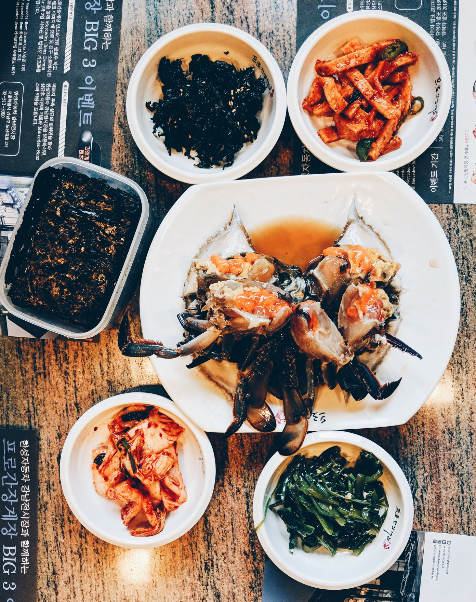
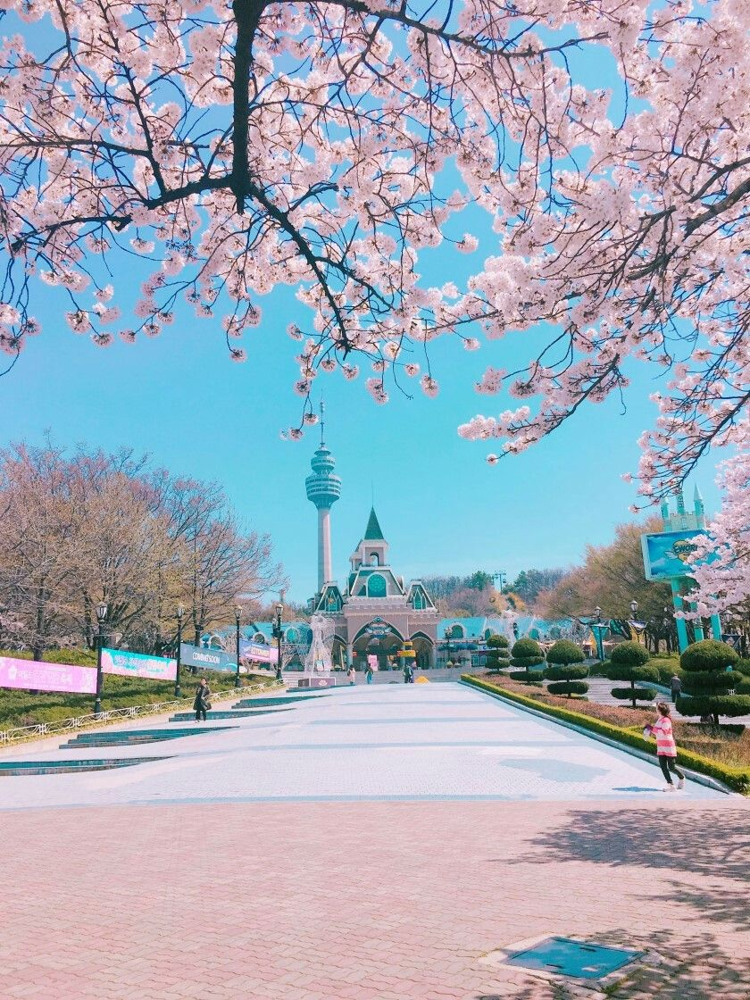
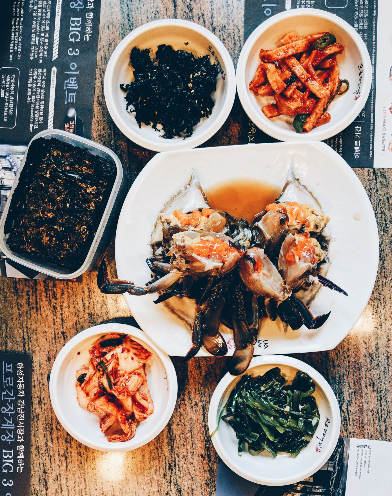
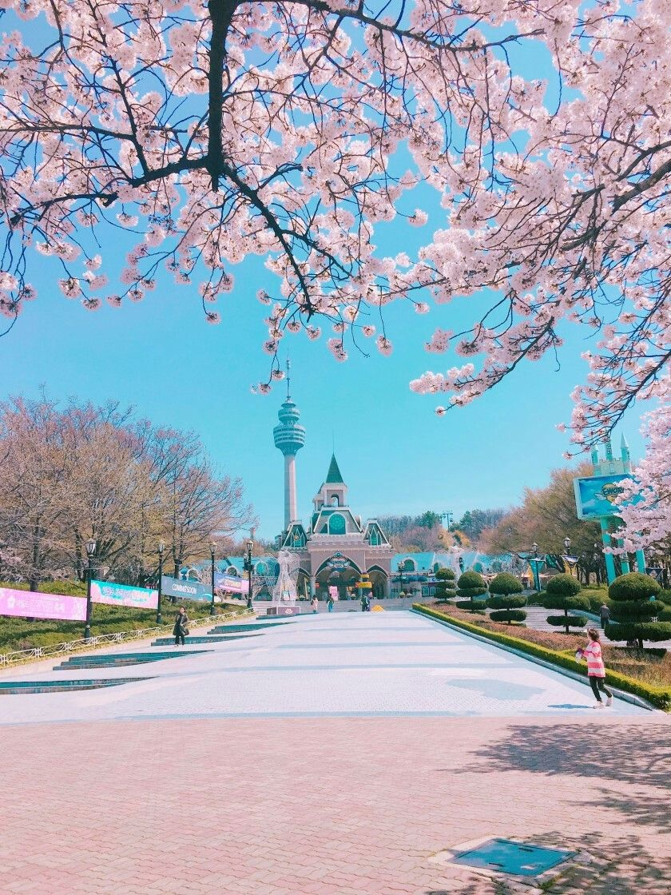
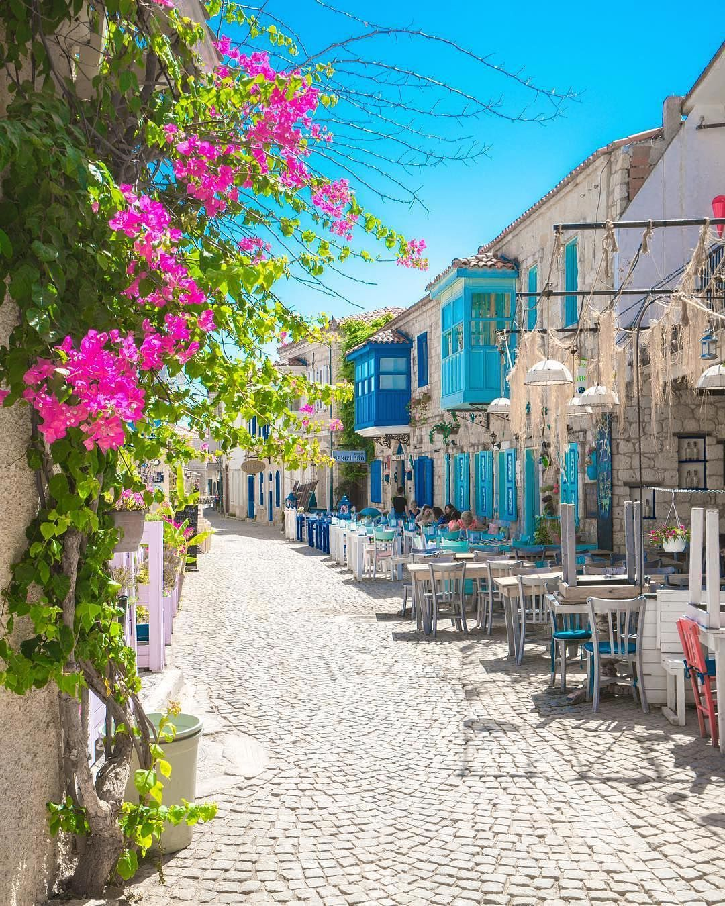
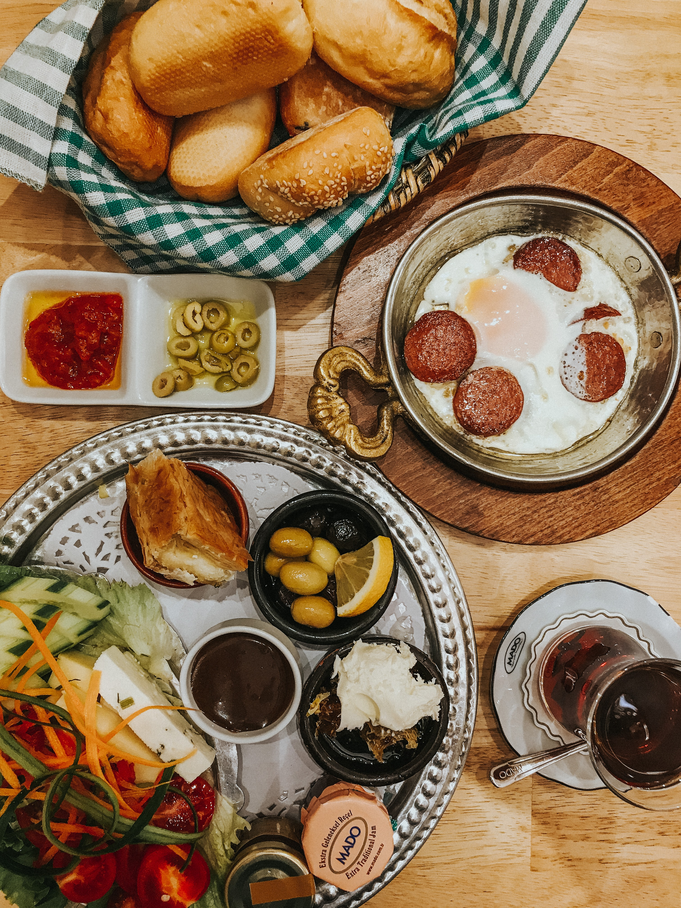
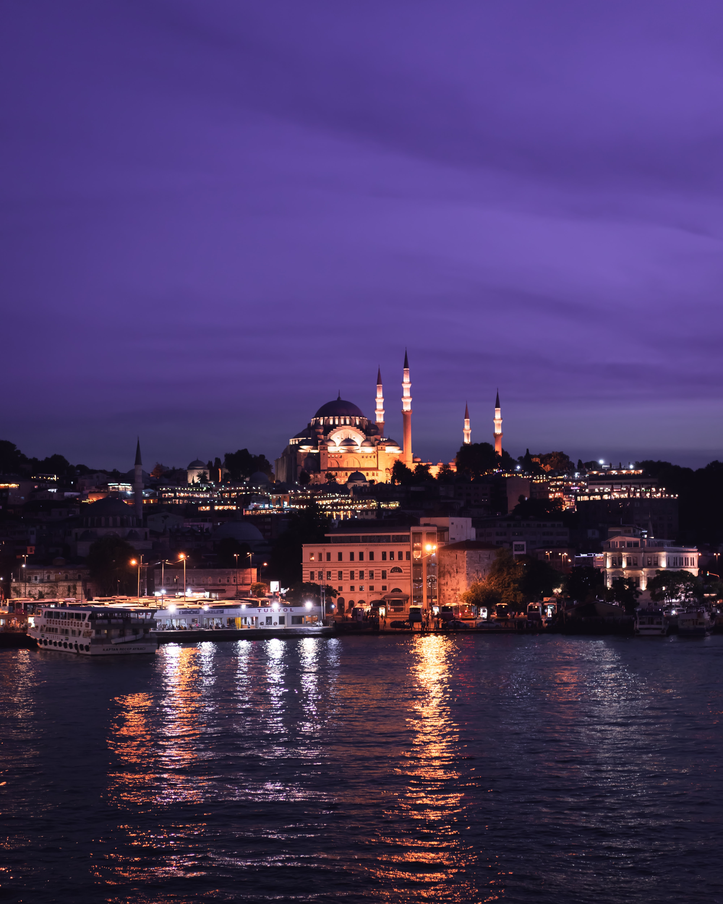
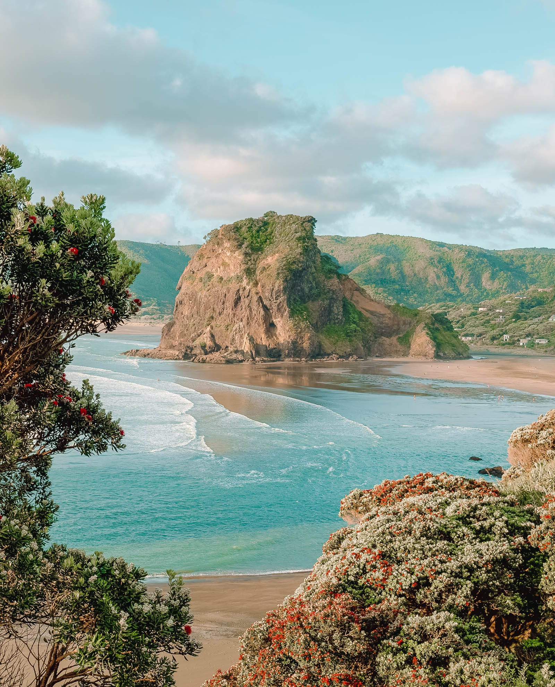
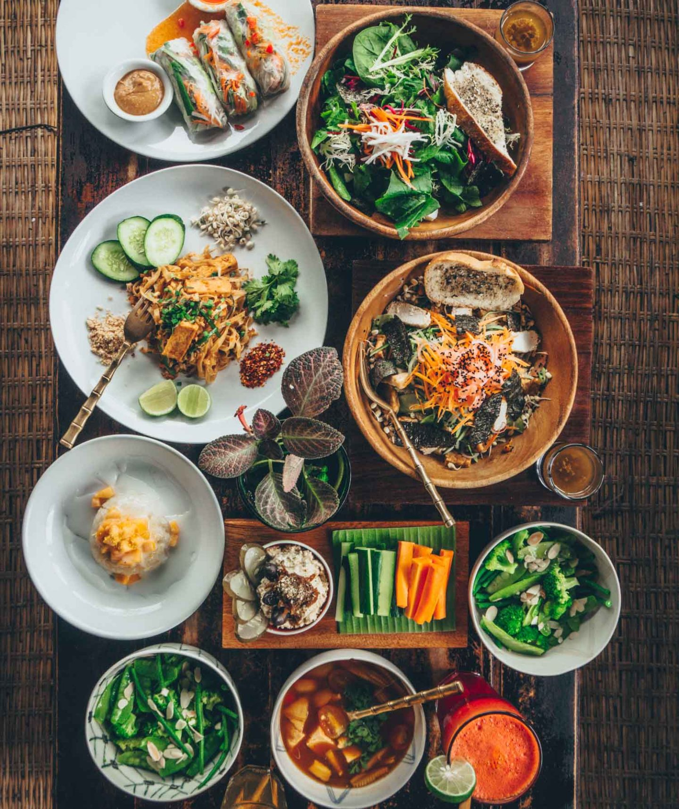
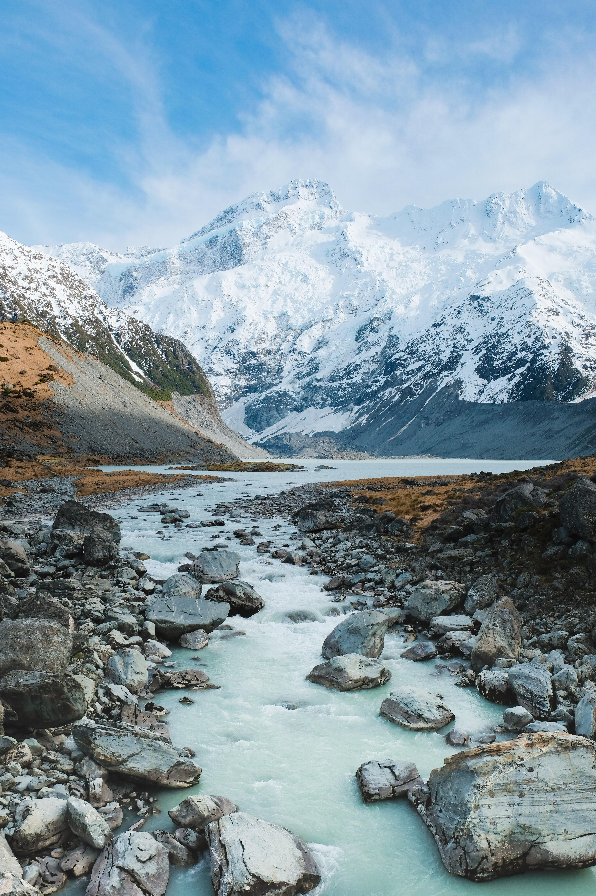

Let's travel together
 



Korea
South Korea is an extraordinary country filled with beautiful beaches, thriving cities, ancient temples, remarkable natural scenery and most importantly, friendly people with ancient history.Seoul is an incredible city, brimming with mouth-watering food, exciting attractions and unforgettable shopping spots. The number of things to do, see and eat in Seoul are endless, and unique experiences await you on every corner. If you’re heading to Seoul for the first time, you are in for a one-of-a-kind adventure. Over the centuries, Koreans have created a fascinating and rich food culture made up of meat dishes, stews, soups, noodle dishes, seafood and many vegetable side dishes. Visit South Korea and you should spend an entire day roaming street markets sampling your way through this concert of flavors. Korea also has a lot of beautiful islands, the most popular and largest one being Jeju Island. Jeju Island is one of Korea’s most visited destinations thanks to its exceptional natural wonders and breathtaking beaches.



Turkey
Turkey It’s a fascinating country with a rich history and culture.Crystal clear waters, tall mountains, the ruins of ancient empires, small idyllic villages, huge cosmopolitan cities—Turkey’s many facets are what make it so unique and why it has continued to attract visitors. Every region in Turkey has its own kitchen culture, including distinct ingredients and their resulting recipes. As such, Turkish cuisine is much more than tasty kebab and baklava, including fresh seafood and meze, a whole world of desserts, huge breakfast spreads,and much more.The hamam experience has become synonymous with Turkey and is a favorite among many visitors.Bodrum, Antalya, Izmir, and Fethiye have some of the most beautiful beaches in Turkey, with a spectrum that includes everything from secluded coves to exciting beach parties. With so much history to its name, Turkey also has a lot of fantastic museums that actively preserve findings from the many archaeological sites all around the country.



New Zealand
New Zealand is the most naturally beautiful and safest country in the world.New Zealand is famous for its beautiful scenery — from scenic surf beaches, attractive native forests and snow covered volcanoes in the North Island to the great Southern Alps, braided rivers and deep fjords in the South IslandSnow often arrives in the South Island between June and September, as well as in some of the North Island’s more mountainous areas, attracting skiers from far and wide. The spring and fall months herald milder weather and fewer visitors, but this is still a very pleasant time to visit. Temperatures normally sit in the fifties and sixties.With more than 14,000 kilometres of coastline, New Zealand is home to some amazing seafood. One of the most famous seafood spots is Kaikoura. In Maori, the word ‘Kai’ means food and ‘Koura’ means crayfish – so it’s not hard to guess what Kaikoura is famous for!Best enjoyed while sitting on a New Zealand beach on a balmy summer evening, fish and chips is a Kiwi favourite.
Foreign visitors mostly come to:
| Place name | Description | Info | Watch |
|---|---|---|---|
| Seoul |
A vibrant culture and society that will keep you busy in every season,
a delicious culinary tradition and beautiful natural landscapes
are only some of the reasons that will make you want to travel
to Seoul, one of the best places to visit in Korea.
Seoul is for the serious foodies and is far from just kimchi and
bibimbap,although there are several different kinds of each.
If you’re a party-goer, or a night owl, Seoul is your kind of city.
|
Accommodation: From 133€
Price of beer: 2€
Average cost of dinner : 5€
Cost of activities:
A boat trip starts from 8.50€
N Seoul Tower Ticket Combos from 5.76 €
|
|
| Busan |
Busan is known for its beaches, hot springs,nature reserves and events
such as the city's renowned international film festival held each fall.
The best time to visit Busan is during May,June,July and also in September.
Busan’s food scene is well worth exploring-local specialities
abound and lively markets offer a glimpse into daily life and
a chance to try some magnificent street food.
|
Accommodation: From 70€
Price of soju: 2.30€-3€
Average cost of dinner for two: 16€
Cost of activities:
Busan Air Cruise Cable Car:10.62€
Busan SEA LIFE 13.20€
|
|
| Istanbul | Istanbul is a wonderful city for snacking, and instead of wasting precious sightseeing time on long sit-down lunches, visitors are advised to hand over a couple of coins for a grilled fish sandwich from the boats bobbing near the bridge. Despite the city’s age,thankfully many remains still exist in Istanbul. In Istanbul,you can find the best Turkish foods that have delicious tastes. |
Accommodation: From 70€ Price of turkish tea:0.14€ Average cost of dinner:6€ Cost of activities: Hagia Sophia Tour:7.20€ Aquarium Istanbul:20.54€ |
|
| Cappadocia |
Cappadocia is a surrealistic landscape that you will have
never witnessed before in your lifetime.There are so many
fascinating things to see in Cappadocia.The main 'must-see'
attractions are the two large open-air museums and the best
of the underground cities.During this one-of-a-kind hot air
balloon ride and day tour combo trip, you'll enjoy stunning panoramas.
|
Accommodation: From 60€ Price of turkish coffee: 1€ Average cost of dinner for two: 11€ Cost of activities: Cappadocia Hot Air Balloon:143.89€ Red North Tour:38.91€ |
|
| Queenstown |
Queenstown is known for its commerce-oriented tourism, especially
adventure and ski tourism.The drive from Queenstown to Glenorchy
is a wonderful experience with some awesome sights.
Queenstown is filled with amazing restaurants, bars and cafes
serving delicious food.The town and surrounding area is Nirvana
for anyone interested in getting the adrenalin racing.You can
indulge in sky diving,zipline riding, and even the famous luge.
|
Accommodation: From 150€
Price of flat white: 3.70€
Average cost of dinner: 13.97€
Cost of activities:
Nevis Catapult:41.08€
Big Sky Stargazing:78€
|
|
| Aoraki Mount |
Mount Cook is home of the highest mountains and the longest glaciers.
It is alpine in the purest sense-with skyscraping peaks,glaciers and
permanent snow fields, all set under a star-studded sky.Best way to
see the lake and the surrounding area is by hiking up to Mt John,which
is the little mountain on the leftern shoreside. Famous for its dramatic
natural beauty and holding deep spiritual significance for the Ngāi Tahu iwi,
the park is home to New Zealand's tallest mountain and longest glacier.
|